승강기기사 (2004-09-05 기출문제)
1과목: 승강기 개론
1. 스프링완충기를 카에 적용할 때 적용 중량은?
- 카자중+65kg
- 카자중+적재하중
- 카자중+균형추 자중
- 균형추 자중
(정답률: 61%)

2. 에스컬레이터에서 강도계산에 사용되는 하중의 산출공식은? (단, A는 m2으로 표시된 에스컬레이터의 투영면적이다.)
- 200A
- 270A
- 400A
- 540A
(정답률: 75%)
3. 간접식인 유압식 엘리베이터의 카를 최상층에서 미속으로 상승시켜 플런저가 이탈방지장치로 정지했을 때 꼭대기부 분의 틈새는 약 몇 cm 이상이어야 하는가? (단, 카의 상승 정격속도는 30m/min로 한다.)
- 41.3
- 61.3
- 81.3
- 101.3
(정답률: 46%)
4. 견인비(traction ratio)에 대한 설명으로 맞는 것은?
- 견인비는 0 이상이다.
- 견인비가 낮으면 로프의 수명이 길게 된다.
- 견인비가 높으면 모터의 출력을 작게 할 수 있다.
- 견인비가 높으면 로프와 도르레와의 마찰력이 작아진다.
(정답률: 83%)
5. 경사진 움직이는 보도에서 tread면이 고무제품이나 금속 제품이라도 표면 가공을 하여 미끌어지지 않게 한 것은 몇 도까지 허용되고 있는가?
- 10
- 12
- 15
- 20
(정답률: 52%)
6. 최대 굽힘모멘트 390000kg.㎝, H 250×250×14×9(단면계수 867cm3)인 기계대의 안전률은? (단, 재질의 허용응력은 4000kg/cm2이다.)
- 6
- 9
- 11
- 15
(정답률: 64%)
7. 꼭대기 틈새라 함은 어디서부터 어디까지의 간격인가?
- 카가 최상층에 정지하였을 경우, 카 천장과 승강로 천장간의 거리
- 카가 최상층에 정지하였을 경우, 카 천장에서 기계실 천장간의 거리
- 카가 최상층에 정지하였을 경우, 카 바닥과 기계실 바닥간의 거리
- 카가 최상층에 정지하였을 경우, 카 바닥과 승강로 천장간의 거리
(정답률: 66%)
8. 엘리베이터의 기계실에 설치되지 않아야 할 것은?
- 권상기
- 제어반
- 조속기
- 급배수기기
(정답률: 79%)
9. 점차작동형 비상정지장치에 대하여 옳은 것은?
- 하강중 비상정지장치가 동작된 상태에서 카를 강제로 하강시키면 비상정지장치는 자동 복귀되어야 한다.
- 카용 적용중량은 카자중, 정격하중, 균형로프(체인) 및 카 현수 도르래 중량을 모두 합한 중량으로 한다.
- 균형추용 적용 중량은 균형추 중량, 균형로프 및 균형추 현수 도르래의 중량을 합한 중량으로 한다.
- 카 및 균형추용 비상정지장치의 적용 작동속도는 조속기의 비상정지장치 작동속도로 한다.
(정답률: 57%)
10. 권상기의 주 도르레(main sheave)의 홈 밑을 도려낸 언더컷(under cut)홈을 사용하는 이유는?
- 제조시 가공을 편리하게 하기 위해서
- 로프와의 마찰계수를 크게 하기 위해서
- 로프직경을 줄이기 위해서
- 마모를 줄이기 위해서
(정답률: 71%)
11. 양 단계에서 로프가 느슨해지면 이를 검출하여 동력을 끊어주는 안전장치는?
- 리미트스위치
- 권동식 로프이완 스위치
- 록· 다운 비상스위치
- 정지스위치
(정답률: 74%)
12. 직류 엘리베이터의 속도제어에 대한 설명으로 옳지 않은 것은?
- 속도제어가 용이하고 승차감이 좋다.
- 속도가 90m/min∼1⑤m/min인 경우에 기어드방식을 사용하였다.
- 속도가 120m/min이상인 경우에 기어레스방식을 사용하였다.
- 주로 초고속 엘리베이터에 많이 사용된다.
(정답률: 56%)
13. 엘리베이터의 이상속도를 검출하는 안전장치는?
- 조속기
- 전동기
- 브레이크
- 비상정지장치
(정답률: 66%)
14. 동력전원 설비용량을 산정하는데 필요한 요소가 아닌 것은?
- 정격전류
- 가속전류
- 전압변동률
- 부등률
(정답률: 42%)
15. 랙·피니온식 승강기는 어떤 용도로 많이 사용되는가?
- 병원용
- 고층빌딩 승객용
- 아파트용
- 빌딩 신축공사용
(정답률: 87%)
16. 소음과 진동이 적어서 유압승강기에 주로 사용되는 펌프는?
- 가변토출량식펌프
- 기어펌프
- 스크류펌프
- 베인펌프
(정답률: 76%)
17. 로프 마모 및 파손상태 검사의 합격기준으로 맞는 것은?
- 소선의 파단이 균등하게 분포되어 있는 경우, 1구성 꼬임(스트랜드)의 1꼬임 피치내에서 파단수 이하
- 소선의 파단이 균등하게 분포되어 있는 경우, 1구성 꼬임(스트랜드)의 1꼬임 피치내에서 파단수 2 이하
- 소선에 녹이 심한 경우, 1구성 꼬임(스트랜드)의 1꼬임 피치내에서 파단수 3 이하
- 파단소선의 단면적이 원래의 소선 단면적이 70%이하 로 되어 있는 경우, 1구성 꼬임(스트랜드)의 1꼬임 피치내에서 파단수 2 이하
(정답률: 68%)
18. 도어 슈는 승강장 실홈에 몇 mm 이상 맞물려야 하며 각각의 승강장 도어에는 최소 몇 개의 도어 슈를 설치하여야 하는가?
- 5mm이상 맞물려야 하며, 최소 1개이상 설치한다.
- 5mm이상 맞물려야 하며, 최소 2개이상 설치한다.
- 10mm이상 맞물려야 하며, 최소 1개이상 설치한다.
- 10mm이상 맞물려야 하며, 최소 2개이상 설치한다.
(정답률: 52%)
19. 일종의 압력조정밸브로 회로의 압력이 설정값에 도달하면 밸브를 열어 압력이 과도하게 높아지는 것을 방지하는 장치는?
- 역지밸브
- 스톱밸브
- 안전밸브
- 유량제어밸브
(정답률: 58%)
20. 승강기의 신호장치 중 홀랜턴(Hall lantern)을 설치하는 경우는?
- 주택용 승강기의 1층에 설치
- 군관리방식의 여러대의 승강기를 운행할 때 인디케이터 대신 설치
- 비상용승강기의 비상을 알리기 위해 설치
- 미관용으로 고급 승강기에 설치
(정답률: 75%)
2과목: 승강기 설계
21. 로프식 엘리베이터의 주행여유로 옳은 것은?
- 교류식 정격속도 30m/min인 경우 유입완충기의 카측 최소 거리는 150mm이다.
- 직류식 정격속도 30m/min인 경우 스프링 완충기의 균형추측 최소 거리는 150mm이다.
- 교류식 정격속도 45m/min인 경우 유입완충기의 카측 최대 거리는 450mm이다.
- 직류식 정격속도 60m/min인 경우 스프링 완충기의 균형추측 최대 거리는 600mm이다.
(정답률: 29%)
22. 기어에 대한 설명으로 옳지 않은 것은?
- 전동이 확실하다.
- 강도가 크다.
- 호환성이 좋지 않다.
- 높은 정밀도를 얻을 수 있다.
(정답률: 62%)
23. 엘리베이터에 사용되는 배전선의 전압강하 공식은? (단, e:전압강하[V], L:전선길이[m], Ia:엘리베이터 대당 가속전류[A], A:전선의 단면적[mm2], I:엘리베이터 대당 정격전류[A], Y:부등률, N:엘리베이터 대수, k:전압강하계수이다.)
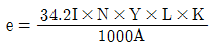
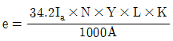
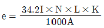
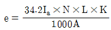
(정답률: 39%)
24. 엘리베이터가 2대 이상 나란히 있는 경우의 승강로의 폭치수는 n x + (n-1)×150으로 나타낸다. 이 때 x 는 무엇을 나타내는가?
- 1대의 엘리베이터 승강로의 안길이 최소치수
- 2대의 엘리베이터 승강로의 안길이 최소치수
- 1대의 엘리베이터 승강로의 폭 최소치수
- 2대의 엘리베이터 승강로의 폭 최소치수
(정답률: 44%)
25. 승장 도어 시스템에 대한 설명 중 잘못된 것은?
- 도어 인터록은 중력이나 압축스프링 또는 두가지의 조합에 의한 방식으로 연결장치에 의하여 잠긴위치에 유지되어야 한다.
- 규정에 의한 인터록장치는 잠금동작과 정상운전을 위한 구동기계의 동작이 동시에 일어 나도록 설계되어야 한다.
- 인터록이 잠금상태에 있지 않아도 착상구역에서의 주 전동기 동작은 허용된다.
- 중앙 여닫이 문 및 수직 여닫이 문은 타는 곳에서 다른 문의 앞부분 테두리와의 거리가 5cm 이상 열려지지 않아야 한다.
(정답률: 55%)
26. 엘리베이터의 교통량 계산시 손실시간의 계산과 관련이 없는 것은?
- 승객 출입시간
- 도어 개폐시간
- 승객수
- 주행거리
(정답률: 30%)
27. 화물용 엘리베이터의 적재하중의 종류에 따른 등급의 분류 및 적용에 대한 설명으로 잘못된 것은?
- A급은 하중이 분산되어 어느 한편의 화물 무게도 엘리베이터 정격하중의 1/4을 넘지 않는 것이다.
- B급은 화물자동차 또는 승용차를 엘리베이터의 정격 용량까지 운송하는데 전용되는 경우이다.
- C급은 운반하중이 정격하중을 넘지 않고 집중하중의 무게가 정격부하의 1/4이상인 경우에 적용된다.
- C2급 하중에서 화물을 싣거나 내릴 때 카바닥의 최대 하중은 정격하중의 130%를 초과하지 않도록 한다.
(정답률: 42%)
28. 그림과 같은 스프링의 명칭으로 옳은 것은?
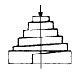
- 원통스프링
- 나선스프링
- 볼류트스프링
- 겹판스프링
(정답률: 47%)
29. 엘리베이터용 가이드 레일에 관한 사항으로 틀린 것은?
- 엘리베이터의 정격용량에 관계가 있다.
- 대형 화물용 엘리베이터의 경우 하중을 적재할 때 발생되는 카의 회전모멘트는 무시한다.
- 비상정지장치가 작동한 후에도 가이드 레일에는 좌굴이 없어야 한다.
- 레일 브라켓의 간격을 작게 하면 동일한 하중에 대하여 응력과 휨은 작아진다.
(정답률: 60%)
30. 변압기 용량을 산정할 때 인버터 엘리베이터의 경우 정격전류는 전부하 상승전류의 약 몇 % 인가?
- 70
- 80
- 90
- 100
(정답률: 34%)
31. 야간에 카 안의 범죄활동을 방지하기 위한 스위치는?
- 스톱모션스위치
- 각층 강제정지스위치
- 록다운스위치
- 게이트스위치
(정답률: 76%)
32. 엘리베이터 제어반내에 사용되지 않는 것은?
- 변압기
- 전자접촉기
- 조속기 스위치
- 배선용차단기
(정답률: 65%)
33. 유압식 엘리베이터에서 수동 하강밸브가 부착되어 있어 정전이나 어떤 원인으로 엘리베이터가 층 중간에 정지한 경우라도 카를 안전하게 하강시킬 수 있는 밸브는?
- 스톱밸브
- 사이렌서
- 하강유량제어밸브
- 역류제지밸브
(정답률: 73%)
34. 비상용승강기에 대한 설명으로 틀린 것은?
- 2차 소방운전은 승장도어 및 카 도어가 열린상태에서 운행할 수 있어야 한다.
- 소방운전시 카 등록을 한 후 최초 목적층에 자동착상 하면 남아있는 모든 등록은 취소되고, 자동으로 문이 열려야 한다.
- 피난층이나 바로 위층 또는 아래층에 설치한 비상되 돌림 버튼과 중앙감시반의 비상용 카 스위치의 기능은 동일하다.
- 비상용승강기 이외에 다수의 일반용승강기가 있을 경우, 비상시 자가발전에 의한 비상용승강기의 운행은 어떠한 경우라도 위해를 받지 않아야 한다.
(정답률: 57%)
35. 승강기 감시반에 관한 설명으로 옳지 않은 것은?
- 일반 감시반과 컴퓨터 감시반이 있다.
- 일반 감시반에는 분석 기능이 없다.
- 감시반의 기능과 비상호출 기능은 별개이다.
- 컴퓨터 감시반은 도어의 개폐상태를 감시할 수 있다.
(정답률: 55%)
36. 60Hz, 6극 유도 전동기의 슬립이 3%이다. 이 전동기의 회전속도는 몇 rpm 인가?
- 1100
- 1164
- 1200
- 1800
(정답률: 52%)
37. 엘리베이터의 주로프와 권상기 도르레의 설계에 대한 설명이 잘못된 것은?
- 주로프의 직경은 12mm이상의 것을 사용한다.
- 주로프의 수는 3본이상으로 한다.
- 권상기 도르레의 직경은 주로프 직경의 30배이상이 되도록 한다.
- 주로프의 파단강도는 135kg/mm2정도로 한다.
(정답률: 52%)
38. 다음의 조건에서 기계대에 걸리는 하중은 몇 kg 인가?
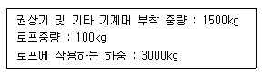
- 3⑤0
- 4600
- 4700
- 7700
(정답률: 42%)
39. 엘리베이터의 수송능력에 관한 설명으로 틀린 것은?
- 각 층 정지 또는 격층 운전의 경우 수송능력은 거의 최상층 바닥에서 최하층 바닥까지의 시간에 따라 결정되며, 공칭속도에 의한 차는 거의 없다.
- 빈번하게 정지하는 엘리베이터에서는 공칭속도를 높게 하는 것보다 최상층 바닥에서 최하층 바닥까지의 시간을 단축시키는 것이 중요하다.
- 일주운전의 정지수가 줄어 들수록 공칭속도의 영향이 커진다.
- 공칭속도가 높은 엘리베이터일수록 반드시 실효속도는 높아지고 일주시간은 짧아진다.
(정답률: 42%)
40. 엘리베이터의 구조 설계시 고려할 사항으로 틀린 것은?
- 승강로의 주벽 및 개구부는 방화상 지장이 없는 구조로 해야 한다.
- 승객용엘리베이터에는 외부에서 구출할 수 있는 비상 구출구를 설치해야 한다.
- 엘리베이터의 전동기 및 권상기는 다른 엘리베이터와 공용으로 사용할 수 있다.
- 승객용 엘리베이터에는 하나의 출입구만을 설치해야 한다.
(정답률: 58%)
3과목: 일반기계공학
41. 밀링에서 지름 60㎜의 커터로 30m/min의 절삭속도로 절삭하는 경우 커터의 날수가 12개이고, 날 1개당의 이송을 0.2 ㎜라 하면 분당 회전수는 약 몇 rpm 인가?
- 318
- 248
- 159
- 124
(정답률: 49%)
42. 지름 20㎜의 드릴로 연강에 구멍을 뚫을 때, 회전수가 200rpm 이면 절삭속도는 약 몇 m/min 인가?
- 10.5
- 12.6
- 15.5
- 17.5
(정답률: 59%)
43. 다음 전동장치 중 일반적으로 축간거리를 가장 크게할 수 있는 것은?
- 벨트 전동장치
- 체인 전동장치
- 기어 전동장치
- 로프 전동장치
(정답률: 59%)
44. 커넥팅로드와 같이 형상이 복잡한 것을 소성 가공하는 방법을 무엇이라 하는가?
- 압출
- 형단조
- 압연단조
- 인발
(정답률: 67%)
45. Y 합금에 대한 다음의 설명 중 틀린 것은?
- Al + Cu + Mg + Ni의 합금이다.
- 내열성이 큰 알루미늄 합금이다.
- 실린더 헤드에 사용된다.
- 높은 온도에서 열전도율이 작다.
(정답률: 52%)
46. 재질이 동일하며 회전수도 같을 경우 축경을 2배로 하면 동일강도로서 전달시킬 수 있는 마력(ps)은 몇 배가 되는가?
- 8
- 4
- 1/4
- 1/8
(정답률: 37%)
47. 소재 또는 공구를 양쪽 혹은 한쪽만 회전시켜 공구 표면 형상과 동일한 형상을 소재에 각인하는 가공법은?
- 전조가공
- 프레스가공
- 절단가공
- 압연가공
(정답률: 55%)
48. 후크의 법칙이 적용될 때 변형량 식으로 옳은 것은? (단, A=단면적, E=세로탄성계수, ℓ =길이, P=하중이다.)
- Pℓ/AE
- AE/Pℓ
- APℓ/E
- E/APℓ
(정답률: 73%)
49. 압축하여 눌렀을 때에 넓게 퍼져 늘어나는 금속재료의 기계적 성질을 의미하는 용어는?
- 강도
- 인성
- 전성
- 취성
(정답률: 52%)
50. 플라스틱의 특징으로 외력을 가하면 어느 정도의 저항력으로 그 형태를 유지하는 성질은?
- 소성
- 탄성
- 가소성
- 내성
(정답률: 44%)
51. 유체기계의 유압기 제어밸브의 종류가 아닌 것은?
- 압력제어밸브
- 유량제어밸브
- 방향제어밸브
- 유속제어밸브
(정답률: 60%)
52. 연삭 숫돌 표시법에서 GC 36 K 8 V 로 표시되어 있을 때 K 는 무엇을 나타낸 것인가?
- 숫돌 입자
- 입도
- 결합도
- 조직
(정답률: 31%)
53. 합성 수지의 일반적인 특성 중 금속 재료보다 우수하여 널리 활용되는 특성은?
- 인장강도
- 열전도성
- 절연성
- 내구성
(정답률: 43%)
54. 일반적인 탄소강에 대한 다음 설명 중 틀린 것은?
- 실용되는 탄소강의 탄소 함유량은 0.⑤ ~ 1.7%까지가 일반적이다.
- 저탄소강은 연질이어서 가공이 용이하나, 담금질효과가 거의 없다.
- 고탄소강은 경질이어서 가공이 어려우나, 담금질효과가 매우 좋다.
- 30℃이하에서 가공하는 것을 상온가공이라 하고, 0℃이하에서 가공하는 것을 저온가공이라 한다.
(정답률: 59%)
55. 리벳팅에서 기밀을 요할 때 리벳팅 후 냉각상태에서 판의 끝을 75∼85° 정도로 깍아준 후 코킹작업을 하여 판을 밀착시킨다. 이후에 더욱 기밀을 유지하기 위해 하는 작업은?
- 드릴링
- 리밍
- 펀칭
- 플러링
(정답률: 47%)
56. 200 rpm으로 10 PS를 전달하는 축에 작용하는 토크는 몇㎏f-cm 인가?
- 358.1
- 487
- 3581
- 4870
(정답률: 40%)
57. 40~50% 정도의 니켈을 함유한 니켈-구리계 함금으로 전기 저항이 크고, 온도계수가 작아서 전기 저항선이나 열전대로 많이 사용되는 것은?
- 인바
- 모넬메탈
- 엘린바
- 콘스탄탄
(정답률: 53%)
58. 묻힘키에서 키의 폭, 높이, 길이를 각각 b, h, l 이라 하고, 축지름이 d, 전달토크를 T라 할 때 키에 발생하는 전단응력 τ는?
- T/(hld)
- 4T/(bld)
- T/(bld)
- 2T/(bld)
(정답률: 35%)
59. 다음 펌프 중 가장 높은 고압에 사용할 수 있는 펌프는?
- 원심펌프
- 축류펌프
- 사류펌프
- 왕복펌프
(정답률: 33%)
60. 유니버설 커플링이 사용될 때 두 축의 최대 교차 각도는?
- 15°
- 30°
- 45°
- 60°
(정답률: 52%)
4과목: 전기제어공학
61. 프로세스제어(process control)에 속하지 않는 것은?
- 온도
- 액면
- 위치
- 압력
(정답률: 55%)
62. 전압 440V, 60Hz로 △결선된 3상발전기에 50kVA의 부하가 평형으로 접속되어 있다. 이때 발전기 각 상의 전류는 약 몇 A 인가?
- 18.9
- 37.9
- 56.8
- 65.6
(정답률: 42%)
63. 그림은 제어회로의 일부이다. 회로의 설명이 잘못된 것은?
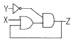
- 자기유지회로이다.
- Z=(X+Z)Y 이다.
- Y가 "0"인 상태에서 X가 "1"이면, Z는 "1"이 된다.
- X에 관계없이 Y가 "1"이면, Z는 "0"이다.
(정답률: 50%)
64. 불연속제어에 속하는 것은?
- 비율제어
- 비례제어
- 미분제어
- ON-OFF제어
(정답률: 55%)
65. 그림과 같은 콘덴서의 직·병렬회로에 200V의 전압을 인가했을 때 4μF 콘덴서 양단의 전압은 몇 V 인가?
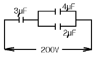
- 33.3
- 50
- 66.7
- 100
(정답률: 44%)
66. 정현파 교류전압 v=Vmsin(ωt+θ)의 평균값은 최대값의 약 몇 배인가?
- 0.414
- 0.577
- 0.637
- 0.707
(정답률: 32%)
67. 전력에 대한 설명으로 옳지 않은 것은?
- 단위는 Ｊ/s 이다.
- 단위시간의 전기 에너지이다.
- 공률과 같은 단위를 갖는다.
- 열량으로 환산할 수 있다.
(정답률: 52%)
68. 계단입력에 대한 시스템의 바람직한 응답특성을 출력하기 까지의 시간은?
- 상승시간
- 무응답시간
- 시정수
- 세틀링시간
(정답률: 37%)
69. 3상 유도전동기의 속도제어방법으로 사용되는 것이 아닌 것은?
- 슬립 s의 변화에 의한 방법
- 용량 P의 변화에 의한 방법
- 극수 P의 변화에 의한 방법
- 주파수 f의 변화에 의한 방법
(정답률: 48%)
70. 3상 동기발전기를 병렬운전시키는 경우 고려하지 않아도 되는 것은?
- 전압 파형의 동일 여부
- 상회전의 동일 여부
- 회전수의 동일 여부
- 발생 전압의 동일 여부
(정답률: 60%)
71. 그림과 같은 계통의 전달 함수는?
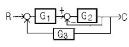
- G1G2/1+G2G3
- G1G2/1+G1+G2G3
- G1G2/1+G2+G1G2G3
- G1G2/1+G1G2+G2G3
(정답률: 58%)
72. 전압, 전류, 주파수 등 전기적인 양을 주로 제어하는 것으로서 응답속도가 빨라 정전압장치나 발전기 및 조속기의 제어 등에 활용하는 제어방법은?
- 서보기구
- 프로세스제어
- 자동조정
- 비율제어
(정답률: 53%)
73. 제어계를 동작시키는 기준으로 직접 제어계에 가해지는 신호는?
- 기준입력신호
- 동작신호
- 조절신호
- 주피드백 신호
(정답률: 45%)
74. 전자밸브는 무슨 동작을 하는가?
- 2위치 동작
- D 동작
- PＩD 동작
- P 동작
(정답률: 37%)
75. 유도전동기에서 슬립이 "0" 이란 의미와 같은 것은?
- 유도전동기가 동기속도로 회전한다.
- 유도전동기가 전부하 운전상태이다.
- 유도전동기가 정지상태이다.
- 유도제동기의 역할을 한다.
(정답률: 56%)
76. 그림과 같은 전자릴레이회로는 어떤 게이트 회로인가?
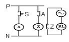
- AND
- OR
- NOR
- NOT
(정답률: 45%)
77. 온도를 임피던스로 변환시키는 요소는?(오류 신고가 접수된 문제입니다. 반드시 정답과 해설을 확인하시기 바랍니다.)
- 측온저항
- 광전지
- 광전다이오드
- 전자석
(정답률: 18%)
78. 다음 논리식 중 옳지 않은 것은?
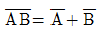
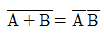
- A+A=A
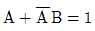
(정답률: 57%)
79. 그림과 같은 미터 브리지가 R=10kΩ, X=30kΩ에서 평형 되었다. L1과 L2의 합이 100cm일 때 L1의 길이는 몇 ㎝인가?
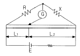
- 25
- 33
- 66
- 75
(정답률: 40%)
80. 저항체에 전류가 흐르면 줄열이 생기는데 이때 안전전류는 전력의 몇 제곱에 비례하는가?
- 1
- 2
- 1.2
- 3/2
(정답률: 34%)